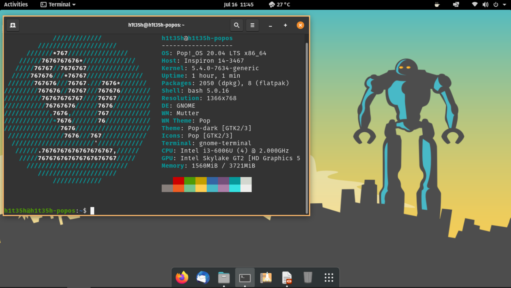

Pop!_OS
Pop!_OS on operatsioonisüsteem professionaalsetele kasutajatele, nt arendajatele, disaineritele ja teistele spetsialistidele olles loodud just nimelt nende vajadusi silmas pidades. Turvaline ja usaldusväärne avatud lähtekoodiga tarkvara. Pop!_OS on mõeldud kiireks navigeerimiseks, lihtsaks tööruumi korraldamiseks ja sujuvaks, mugavaks töövooks.
Kuidas installida?
Mõnevõrra keerukam kui nt Ubuntu puhul, sest pole nii automatiseeritud kui nt Ubuntu installimine
Ekraanikuva näide
